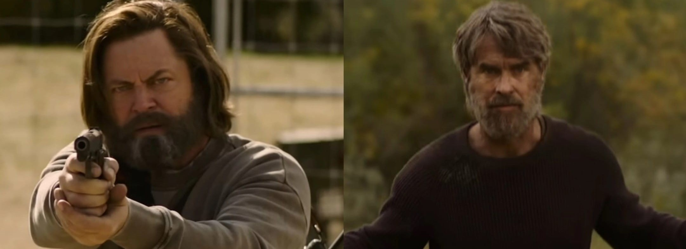
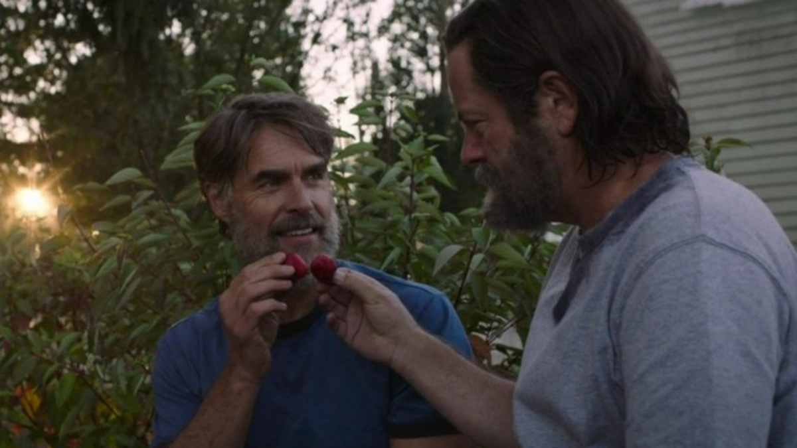

The Last of Us: serie de HBO cambió la historia de Bill y Frank por esta razón
Neil Druckmann decidió modificar el guion original por una sugerencia de Craig Mazin
La serie de The Last of Us decidió enfocar su capítulo 3 en la historia de Bill y Frank, personajes que tienen cierto peso en el juego, pero que protagonizan una historia secundaria que no se desarrolló del todo en la obra de Naughty Dog.
Sin entrar en ningún tipo de spoilers, la serie de HBO decidió explorar con mayor profundidad la relación entre estos personajes. Lo interesante es que hizo algunos cambios a su historia respecto a lo narrado en el juego. Así que Neil Druckmann y Craig Mazin, creativos de la serie, decidieron explicar por qué hicieron dichas modificaciones y qué significan.
¿Por que la historia de Bill y Frank es diferente en la serie?
En el juego, Bill y Frank son presentados como socios que formaron una alianza para sobrevivir a las consecuencias del brote. En la serie se explora su relación amorosa y se modifica su final con un objetivo: darle un mensaje a Joel.
De acuerdo con Druckmann, Mazin planteó los cambios como una especie de moraleja para el protagonista en donde se reflexionara sobre lo que puede ganar o perder en su viaje. El creativo de Naughty Dog afirmó que pudo haber rechazado las modificaciones, pero al final accedió ya que uno de sus objetivos es “estar abierto a nuevas ideas”. Al final, aceptó ya que la historia le pareció genial y conmovedora.
"En cierto modo, también es una señal de advertencia para Joel (…) En la serie de televisión podíamos salir de la perspectiva de nuestro personaje principal, pues en el juego estamos muy apegados a puramente Joel o puramente Ellie. Aquí, pudimos ver lo que pasó con Bill en el brote”, afirmó Druckmann.
Sin entrar en detalles de la historia, los cambios fueron positivos para Mazin, pues desde su perspectiva llevaron a un final feliz pese a todo lo ocurrido. Esto contrasta con el juego y con la historia de Joel en la serie, que ha tenido importantes fracasos.
"Estoy especialmente contento por la forma en que Bill... ha conseguido inspirar a Joel para que se lleve a Ellie al oeste. Le ha dado a Joel esta instrucción póstuma de que los hombres como tú y yo estamos aquí por una razón, para proteger a la gente que amamos, y que Dios ayude a cualquiera que se interponga en nuestro camino”, afirmó Mazin.
Por último, Druckmann explicó que este tipo de cambios no nacen con la idea de sorprender a los fans familiarizados con el juego, pues en realidad se originan de una reflexión sobre la narrativa de la serie y sobre su contribución a la historia principal. Mazin celebró la decisión de Druckmann de admitir cambios como estos respecto al material original.
"Él, me pareció a mí, siempre entendió que sería genial verlo en televisión, y el mundo que creó con el guion que escribió para el juego... Por lo que a mí respecta, es lo suficientemente complicado y lo suficientemente amplio e interesante y filosófico como para ser flexible a los cambios en [cómo] se adapta a un medio diferente", concluyó el creativo.